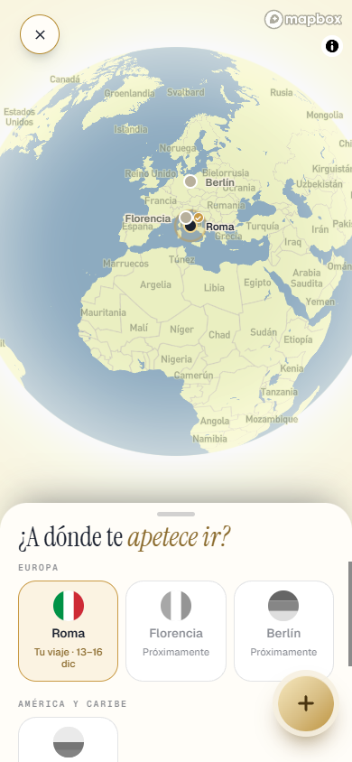
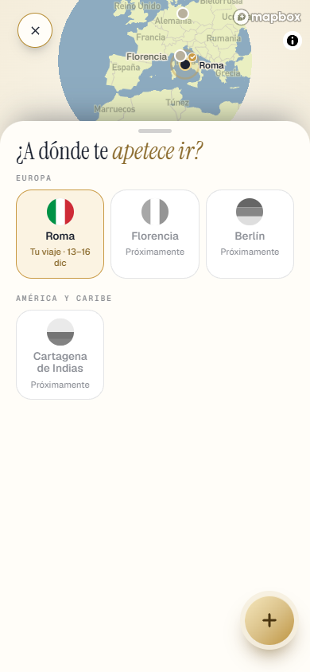
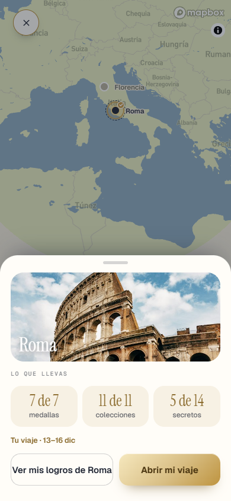
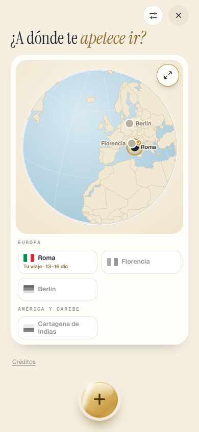
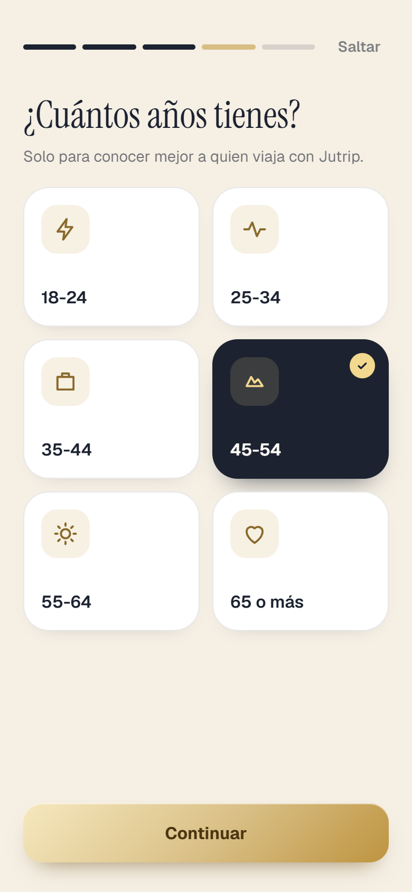
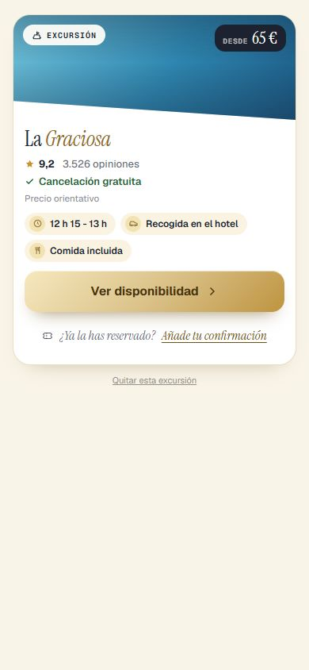
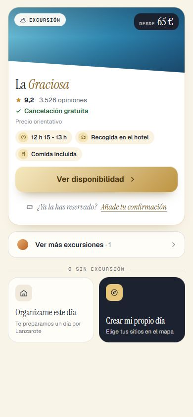

V41 · «Mis viajes», el globo, la edad por franjas y cinco arreglos
4 · El viaje que desaparecía de «Mis viajes» (lo primero)
Qué pasaba, en palabras sencillas. La lista de «Mis viajes» se pedía una sola vez, al abrir la app, y se guardaba en el móvil. Cuando creabas un viaje nuevo (Roma), se guardaba bien en la nube, pero nadie lo apuntaba en esa lista del móvil. El Perfil, para no dejarte sin tu viaje, añade siempre «el viaje que tienes abierto»: por eso Roma salía mientras estabas dentro de Roma. En cuanto abrías otro (Lanzarote), Roma ya no era «el abierto» y, como no estaba en la lista, desaparecía; solo quedaba Lanzarote («Ver todos (1)»). Al recargar la app, la lista se volvía a pedir a la nube y Roma volvía. No se borraba nada: la lista se quedaba vieja.
Arreglo: cada vez que se guarda un viaje (el primero y los siguientes) se apunta al momento en la lista del móvil: no baja nada, es lo que ya se acaba de subir. Además, el viaje que tienes abierto manda sobre su copia de la lista (por si las fechas o el nombre han cambiado).
Al volver a la app tras 5 minutos o más, con la pantalla visible, la lista se vuelve a pedir (una sola petición, aunque la pidan varias piezas, y como mucho una cada 5 minutos). Al crear, borrar o unirse a un viaje y al entrar con la cuenta ya se actualizaba.
Cada cuánto se pide y cuánto baja (regla V36): guardar un viaje, nada (cero descarga); volver a la app tras un rato, como mucho una vez cada 5 minutos, la lista ligera de viajes (unos 2-4 KB por viaje: con 2 viajes, 5-8 KB). Nunca en bucle ni en segundo plano.
Solo lectura en producción: no se ha tocado ni borrado nada.
1 · «¿A dónde te apetece ir?» a pantalla completa
Un globo de verdad (Mapbox en modo globo): gira al arrastrarlo, se acerca con dos dedos; colores de nuestro mapa. Pines: listo (oscuro), «Tu viaje» (anillo dorado), «Ya has estado» (✓ dorado) y Próximamente (gris).
Los nombres nunca se pisan (comprobado con Roma, Florencia y Cartagena de Indias, midiendo rectángulos en pantalla y con un barrido de 700 combinaciones de centro y zoom: 0 solapes). Si dos están cerca, se ve el de más prioridad y el otro al acercar. Cartagena ya no sale cortada.
Destinos, estados y banderas salen de los datos de la app (nada de Pisa, Marrakech ni Cancún del ejemplo de Design).
La hoja de abajo: bajada, casi todo el globo; subida, la lista por continentes con bandera; ninguna tarjeta queda tapada por el +.
Al tocar un pin o una tarjeta el globo vuela hasta ese destino y sale su hoja de siempre ([Crear viaje], [Abrir mi viaje] o [Avísame]).
Cómo se llega: en el Perfil se queda el bloque «¿A dónde te apetece ir?» con la vista pequeña (dibujada); al tocarlo se abre el globo con su X. Igual para el viajero nuevo.
Cuántas cargas de Mapbox hace: abrirlo = 1 carga de mapa; cerrarlo = 0 más (se destruye con map.remove()); abrirlo otra vez = 1 más; nunca hay dos mapas a la vez; el Perfil con el globo sin abrir = 0 cargas. El globo no hace ninguna consulta nueva a Supabase.

Hoja bajada

Hoja subida

Tarjeta de Roma

El bloque pequeño del Perfil
2 · Qué sale al abrir la app
De viaje (hoy está dentro de un viaje): HOY, y con un viaje próximo: ese viaje. Esto ya funcionaba así (dondeAbrir): no se ha tocado.
Sin ningún viaje: antes salía el formulario de crear viaje; ahora se abre el Perfil con «¿A dónde te apetece ir?».
3 · La edad, por franjas
«¿Cuántos años tienes?» con «Solo para conocer mejor a quien viaja con Jutrip.» y las seis opciones (18-24 · 25-34 · 35-44 · 45-54 · 55-64 · 65 o más), una sola, con «Saltar» (el botón de abajo es el [Continuar] de las demás preguntas de Design).
Migración 0094 (SIN APLICAR): columna franja_edad en viajero_primera_vez (solo esos seis valores); las respuestas con anio_nacimiento pasan a su franja con la edad de hoy; anio_nacimiento no se borra (deja de pedirse y de enseñarse). Con docs/dias/COMPROBAR_0094.sql (una fila, todo = true). Sin ella la app funciona: la pregunta sale, la franja aún no se guarda y el panel saca la franja de las respuestas viejas.
Menores de 18 con respuesta vieja (año): sin franja; no cuentan en el reparto por edades (las seis franjas empiezan en 18).
El panel: donde decía «nacida en 1990» sale «25-34 años»; el reparto «Edad por tramos» usa las seis franjas.
«Empezar de cero» y «Borrar mi cuenta» siguen borrando la fila entera (la última versión de empezar_de_cero es la de la 0091 y ya borra viajero_primera_vez).

5 · Los cinco arreglos
Perfil: quitado el botón grande marrón «Crear un viaje» (el que salía bajo «Mis viajes» cuando todos los viajes habían pasado). No había otro «Crear viaje / Crear mi viaje» bajo la cabecera del Perfil. Para crear viajes: el globo y el +.
Crear un viaje desde el globo — sin [Continuar]: el destino llegaba puesto de antemano y el formulario, al ver que «no cambiaba», nunca clasificaba el destino (el tipo de viaje: ciudad, isla…); sin esa clasificación el transporte no daba la carga por acabada ni salía [Continuar], y el título se quedaba en «Conectando…». Ahora el destino se clasifica en cuanto se elige desde el globo, la hoja del destino o [Crear viaje] (y, por si acaso, al empezar el viaje); y la clasificación no se paga dos veces aunque la pidan dos piezas.
Añadir día → excursión → «Añadir a mi viaje»: ahora sale la tarjeta de excursión de Design (la de La Graciosa): foto, nota y opiniones, cancelación, «Precio orientativo», etiquetas de horas, recogida y comida, [Ver disponibilidad] y «¿Ya la has reservado? Añade tu confirmación». «Quitar esta excursión» se queda, en pequeño, debajo. Ya no sale «Esta excursión ocupa el día entero — relájate y disfruta.».
Día de excursión: en lugar de la línea subrayada «¿Prefieres seguir en {destino}?», «O SIN EXCURSIÓN» con dos botones como los de Roma: el blanco «Organízame este día» («Te preparamos un día por {destino}»; monta la ruta del día) y el azul oscuro «Crear mi propio día» («Elige tus sitios en el mapa»; día en blanco). El blanco solo sale cuando hay una ruta nuestra para ese día; sin ella, solo «Crear mi propio día». Los de Roma con interruptor no se tocan. Para todos los destinos.
Las obras no se señalan: quitado de Barcelona › Camp Nou el «En obras de remodelación — consulta disponibilidad antes de ir» (queda «El museo del Barça tiene la colección de trofeos más impresionante de Europa»). Busqué «obras», «en restauración», «andamios», «remodelación», «reforma», «renovación» y «rehabilitación» en los datos de los destinos, en las fichas y en el código: no había ninguno más que avisara de obras. Quedan «obras» en sentido de arte (obras maestras), «andamio» de Miguel Ángel en un dato histórico y «reabierto … después de años de restauración» (Florencia; es una buena noticia, no un aviso: dímelo si también lo quieres fuera). La nota interna de la Domus Aurea se queda. La regla está apuntada en CLAUDE.md y pruebaV41 falla si un texto del viajero la incumple.

La excursión añadida con «Añadir día»

Día de excursión: los dos botones
No hay captura del transporte con [Continuar]: la clasificación necesita a Claude (sin saldo en el entorno de pruebas); la prueba lo comprueba imitando la respuesta de la clasificación.
La prueba
pruebaV41_viajes (35): al crear un segundo viaje salen los dos en «Mis viajes» sin recargar; el viaje abierto manda; en el Perfil no hay «Crear un viaje»; desde el globo el destino queda clasificado una sola vez; la excursión añadida lleva la tarjeta de Design; con ruta salen los dos botones y sin ella solo «Crear mi propio día»; ningún texto habla de obras; qué sale al abrir.
pruebaV41_globo (106) y pruebaV41_edad (84), de las dos partes que hicieron los agentes.
Además: pruebaJutrip y las de lo tocado (V31, V34, V36, V39, V17, V18, 10G, 10K, V1b…); ver el estado en el resumen.
Tu lista de comprobación de esta tanda
Crea un viaje teniendo otro, abre el otro y vuelve al Perfil: salen los dos en «Mis viajes».
El Perfil no tiene el botón grande «Crear un viaje».
Toca «¿A dónde te apetece ir?»: se abre el globo; gíralo, acércalo, mira que Roma y Florencia no se pisan; toca Roma: sale su hoja; cierra con la X.
Crea un viaje desde el globo: en «Conectando…» acaban saliendo el avión, el ferry y el coche, y aparece [Continuar].
Añade un día de excursión desde «Añadir día»: sale la tarjeta de Design; en un día de excursión salen los dos botones.
Barcelona › Camp Nou: ya no dice que está en obras.
En una cuenta nueva, la pregunta de la edad sale con las seis franjas.
PARA ERIC
Aplica la migración 0094 en el SQL editor de Supabase (supabase/migrations/0094_franja_edad.sql) y luego pega docs/dias/COMPROBAR_0094.sql: debe salir una fila con todo = true.
Qué mirar en el iPhone: el globo (arrastrar, pellizcar, que los nombres no se pisen, la hoja subir y bajar con el asa, que la última tarjeta quede por encima del +); «Mis viajes» tras crear un viaje; el transporte con [Continuar]; la excursión añadida y los dos botones.
El globo lleva el filtro «tono papel» que llevan todos los mapas de la app (el verde y el azul quedan algo más suaves que en el dibujo de Design). Si prefieres los colores exactos de Design, dímelo y se quita el filtro solo en el globo.
La prioridad de los nombres del globo es la de Design (tu viaje > listo > ya has estado > próximamente), no la del encargo (listo primero); se cambia en una línea.
La lista de «Mis viajes» se vuelve a pedir al volver a la app tras 5 minutos o más (5-8 KB con 2 viajes).
Reiniciado el api-server al final de la tanda. No se ha apagado el PC (tu mensaje decía que lo podía apagar al terminar, pero el prompt de la tanda dice «No apagues el PC»: no lo he hecho; dime si de verdad lo quieres).